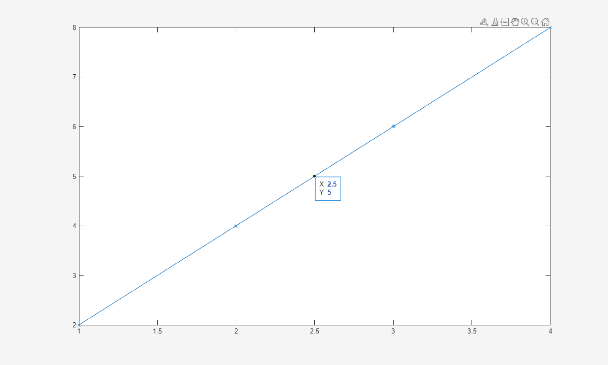
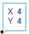
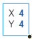
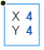
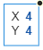

datatip
Create data tip
Description
Data tips are small text boxes that display information about individual data points. By default, the data tips include the data specified during chart creation that correspond to the individual data point.
Creation
Interactively create data tips by clicking on data points in a chart, for example line and
scatter plots. You can also create data tips using the datatip
function.
Syntax
Description
datatip( creates a data tip on the
first plotted data point of the specified chart, such as a line or scatter plot.target)
datatip(___,Name,Value) specifies properties
using one or more name-value pair arguments. Specify name-value pairs after all other
arguments.
dt = datatip(___) returns a
DataTip object. You can specify any of the input argument
combinations in the previous syntaxes. This syntax is useful for controlling the
properties of the data tip.
Input Arguments
Properties
Data Tip
Index of the plotted data, specified as a positive integer.
For example, the plotted data of a 2-D object on a set of Cartesian axes is
contained in its XData and YData properties.
When you specify the DataIndex of a data tip, MATLAB® positions the data tip on the chart by indexing into
XData and YData.
When you create a data tip using this property, do not specify the
x, y, or z
arguments.
Example: datatip(chart,'DataIndex',3) creates a data tip at the
third plotted data point.
Display at closest data point, specified as one of these values:
'on'– Display the data tip at the closest data point. The closest data point depends on the type of chart. For example, on a line chart the closest point has the smallest Euclidean distance from the specified location.'off'– Display the data tip at the closest specified location on the chart, even if it is between data points.
Offset from DataIndex, specified as a scalar. Use this property
to create data tips between adjacent data points on a Line object by
setting SnapToDataVertex to 'off' and
InterpolationFactor to a scalar between 0 and 1.
For example, create a data tip halfway between adjacent data points on a line by
specifying the InterpolationFactor as 0.5.
x = 1:4; y = 2.*x; p = plot(x,y,'-*'); dt = datatip(p,'DataIndex',2, ... 'Location','southeast', ... 'SnapToDataVertex','off', ... 'InterpolationFactor',0.5);

InterpolationFactor is not supported for data tips on all types
of objects.
Location with respect to the data point, specified as one of these values:
| Value | Description | Appearance |
|---|---|---|
'northeast' | Top-right corner of data point |
 |
'northwest' | Top-left corner of data point |
 |
'southeast' | Bottom-right corner of data point |
 |
'southwest' | Bottom-left corner of data point |
 |
Example: dt.Location = 'southwest';
Selection mode for the Location property value, specified as
one of these values:
'auto'– Thedatatipfunction automatically selects the location.'manual'– If you set theLocationproperty, theLocationModeproperty automatically changes to'manual'.
This property is read-only.
Data tip content, specified as a cell array. By default, data tip content is a 2-by-1 cell array for 2-D data tips or a 3-by-1 cell array for 3-D data tips.
To add additional rows to the data tip content, use dataTipTextRow.
Font
Selection mode for the FontName property, specified as one of
these values:
'auto'– Use the same value as theFontNameproperty for theDataTipTemplateobject associated with the chart that contains the data tip.'manual'– If you set theFontNameproperty, theFontNameModeproperty automatically changes to'manual'.
Font size, specified as a scalar value greater than zero in point units. One point
equals 1/72 inch.
Selection mode for the font size, specified as one of these values:
'auto'– Use the same value as theFontSizeproperty for theDataTipTemplateobject associated with the chart that contains the data tip.'manual'– If you set theFontSizeproperty, theFontSizeModeproperty automatically changes to'manual'.
Selection mode for the FontAngle property, specified as one
of these values:
'auto'– Use the same value as theFontAngleproperty for theDataTipTemplateobject associated with the chart that contains the data tip.'manual'– If you set theFontAngleproperty, theFontAngleModeproperty automatically changes to'manual'.
Text interpreter, specified as one of these values:
'tex'— Interpret characters using a subset of TeX markup.'latex'— Interpret characters using LaTeX markup.'none'— Display literal characters.
TeX Markup
By default, MATLAB supports a subset of TeX markup. Use TeX markup to add superscripts and subscripts, modify the font type and color, and include special characters in the text.
Modifiers remain in effect until the end of the text.
Superscripts and subscripts are an exception because they modify only the next character or the
characters within the curly braces. When you set the interpreter to "tex",
the supported modifiers are as follows.
| Modifier | Description | Example |
|---|---|---|
^{ } | Superscript | "text^{superscript}" |
_{ } | Subscript | "text_{subscript}" |
\bf | Bold font | "\bf text" |
\it | Italic font | "\it text" |
\sl | Oblique font (usually the same as italic font) | "\sl text" |
\rm | Normal font | "\rm text" |
\fontname{ | Font name — Replace
| "\fontname{Courier} text" |
\fontsize{ | Font size —Replace
| "\fontsize{15} text" |
\color{ | Font color — Replace
red, green,
yellow, magenta,
blue, black,
white, gray,
darkGreen, orange, or
lightBlue. | "\color{magenta} text" |
\color[rgb]{specifier} | Custom font color — Replace
| "\color[rgb]{0,0.5,0.5} text" |
This table lists the supported special characters for the
"tex" interpreter.
| Character Sequence | Symbol | Character Sequence | Symbol | Character Sequence | Symbol |
|---|---|---|---|---|---|
| α |
| υ |
| ~ |
| ∠ |
| ϕ |
| ≤ |
|
|
| χ |
| ∞ |
| β |
| ψ |
| ♣ |
| γ |
| ω |
| ♦ |
| δ |
| Γ |
| ♥ |
| ϵ |
| Δ |
| ♠ |
| ζ |
| Θ |
| ↔ |
| η |
| Λ |
| ← |
| θ |
| Ξ |
| ⇐ |
| ϑ |
| Π |
| ↑ |
| ι |
| Σ |
| → |
| κ |
| ϒ |
| ⇒ |
| λ |
| Φ |
| ↓ |
| µ |
| Ψ |
| º |
| ν |
| Ω |
| ± |
| ξ |
| ∀ |
| ≥ |
| π |
| ∃ |
| ∝ |
| ρ |
| ∍ |
| ∂ |
| σ |
| ≅ |
| • |
| ς |
| ≈ |
| ÷ |
| τ |
| ℜ |
| ≠ |
| ≡ |
| ⊕ |
| ℵ |
| ℑ |
| ∪ |
| ℘ |
| ⊗ |
| ⊆ |
| ∅ |
| ∩ |
| ∈ |
| ⊇ |
| ⊃ |
| ⌈ |
| ⊂ |
| ∫ |
| · |
| ο |
| ⌋ |
| ¬ |
| ∇ |
| ⌊ |
| x |
| ... |
| ⊥ |
| √ |
| ´ |
| ∧ |
| ϖ |
| ∅ |
| ⌉ |
| 〉 |
| | |
| ∨ |
| 〈 |
| © |
LaTeX Markup
To use LaTeX markup, set the interpreter to "latex". For inline
mode, surround the markup with single dollar signs ($). For
display mode, surround the markup with double dollar signs
($$).
| LaTeX Mode | Example | Result |
|---|---|---|
| Inline |
"$\int_1^{20} x^2 dx$" |
|
| Display |
"$$\int_1^{20} x^2 dx$$" |
|


The displayed text uses the default LaTeX font style. The
FontName, FontWeight, and
FontAngle properties do not have an effect. To change the
font style, use LaTeX markup.
The maximum size of the text that you can use with the LaTeX interpreter is 1200 characters. For multiline text, this reduces by about 10 characters per line.
MATLAB supports most standard LaTeX math mode commands. For more information, see Supported LaTeX Commands. For examples that use TeX and LaTeX, see Greek Letters and Special Characters in Chart Text.
Selection mode for the Interpreter property, specified as one
of these values:
'auto'— Use the same value as theInterpreterproperty for theDataTipTemplateobject associated with the chart that contains the data tip.'manual'— If you set theInterpreterproperty, theInterpreterModeproperty automatically changes to'manual'.
Cartesian Coordinate Data
Position along the x-axis, specified as a scalar using the same units as your data.
Position along the y-axis, specified as a scalar using the same units as your data.
Position along the z-axis, specified as a scalar using the same units as your data.
Polar Coordinate Data
Radius, specified as a scalar using the same units as your data.
This property applies only to data tips on polar plots.
Angle, specified as a scalar in degrees.
This property applies only to data tips on polar plots.
Geographic Coordinate Data
Latitude, specified as a scalar in degrees.
This property applies only to data tips on geographic plots.
Longitude, specified as a scalar in degrees.
This property applies only to data tips on geographic plots.
Interactivity
Context menu, specified as a ContextMenu object that provides
data tip options. You cannot set this property.
Callbacks
Callback Execution Control
Parent/Child
Parent, specified as a object with a DataTipTemplate property.
Examples of objects with a data tip template include Line,
Histogram, Surface, and
FunctionLine objects. Move a data tip to another object by setting
this property.
Identifiers
This property is read-only.
Type of graphics object, returned as 'datatip'. Use this
property to find all objects of a given type within a plotting hierarchy, for example,
when searching for the type using findobj.
Examples
Create a table using the sample file patients.xls. Then, plot the Systolic, Diastolic, and Weight variables in a bubble chart. Then, add a data tip.
tbl = readtable("patients.xls"); b = bubblechart(tbl,"Systolic","Diastolic","Weight"); dt = datatip(b);

Plot data on a scatter chart and define sz as a vector that specifies the marker sizes. Return the Scatter object.
Then, create a data tip at a particular data point by specifying the x- and y-coordinates.
x = linspace(1,10,10); y = x.^2; sz = x; sc = scatter(x,y,sz); dt = datatip(sc,7,49);

Plot data on a bar chart and return the Bar object. Then, create a data tip on the seventh bar by specifying the DataIndex name-value pair argument.
x = 1900:10:2000;
y = [75 91 105 123.5 131 120 107 96 82 73 70];
b = bar(x,y);
dt = datatip(b,'DataIndex',7);
Plot data on a scatter chart and return the Scatter object. Create a data tip at the data point near (3,0) by specifying x = 3 and y = 0 as approximate coordinates. When you create a data tip using approximate coordinates, the data tip appears at the closest data point.
x = linspace(0,2*pi,20);
y = sin(x);
sc = scatter(x,y);
grid on;
dt = datatip(sc,3,0);
Plot data and return the Line object. Show a marker at each plotted data point. Then, create a data tip between two data points by specifying the x- and y-coordinates for the data tip and specifying the SnapToDataVertex name-value pair argument as 'off'.
x = linspace(1,10,10); y = 2.*x; p = plot(x,y,'-*'); dt = datatip(p,3.5,7,'SnapToDataVertex','off');